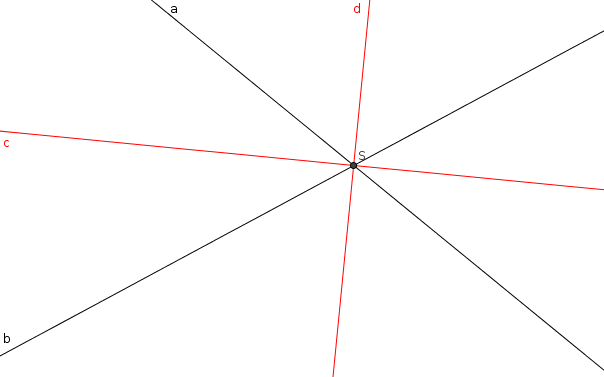
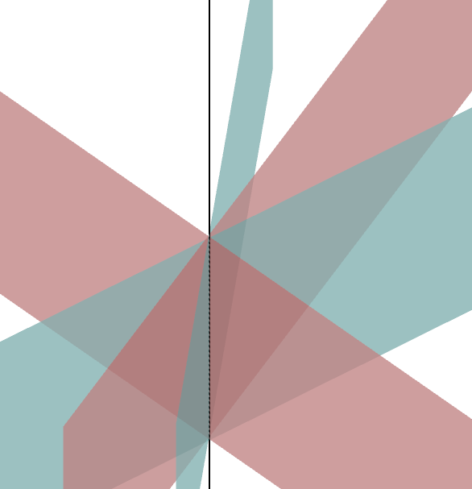

| Choisissez votre langue ! | Choose your language ! |
On considère dans toute cette page la figure formée par deux hyperplans affines F1 et F2 distincts.
Soient :
a1x1+a2x2+ ... + anxn+c1=0 de F1.
b1x1+b2x2+ ... + bnxn+c2=0 une équation d'Euler de F2.
L'égalité d(M,F1)=d(M,F2) peut être écrite :
|a1x1+a2x2+ ... + anxn+c1|= |b1x1+b2x2+ ... + bnxn+c2|
Cette égalité équivaut à la disjonction de deux égalités :
a1x1+a2x2+ ... + anxn+c1= b1x1+b2x2+ ... + bnxn+c2
et
a1x1+a2x2+ ... + anxn+c1= -(b1x1+b2x2+ ... + bnxn+c2)
Une des deux égalités donne l'ensemble vide et l'autre est :
a1x1+a2x2+ ... + anxn+c1= -a1x1-a2x2+ ... - anxn-c2
Cela nous donne donc un nouvel hyperplan d'équation :
2a1x1+2a2x2+ ... + 2anxn+c1+c2=0
On trouve donc un hyperplan parallèle à F1 et à F2 et d'équation normale :
a1x1+a2x2+ ... + anxn+(c1+c2)/2=0
L'ensemble cherché est alors la réunion de l'hyperplan d'équation
(a1-b1)x1+(a2-b2)x2+ ... +(an-bn)xn +(c1-c2)=0
avec l'hyperplan d'équation
(a1+b1)x1+(a2+b2)x2+ ... +(an+bn)xn +(c1+c2)=0
Ces deux hyperplans contiennent bien évidemment tous les deux H.
En outre un vecteur normal au premier est :
\( \displaystyle \overrightarrow{u} \) de coordonnées ((a1-b1), ... ,(an-bn)).
Un vecteur normal au second est :
\( \displaystyle \overrightarrow{v} \) de coordonnées ((a1+b1), ... ,(an+bn)).
On a alors :
Définition
On s'intéresse à l'ensemble des points équidistants des deux hyperplans.Soient :
a1x1+a2x2+ ... + anxn+c1=0 de F1.
b1x1+b2x2+ ... + bnxn+c2=0 une équation d'Euler de F2.
L'égalité d(M,F1)=d(M,F2) peut être écrite :
|a1x1+a2x2+ ... + anxn+c1|= |b1x1+b2x2+ ... + bnxn+c2|
Cette égalité équivaut à la disjonction de deux égalités :
a1x1+a2x2+ ... + anxn+c1= b1x1+b2x2+ ... + bnxn+c2
et
a1x1+a2x2+ ... + anxn+c1= -(b1x1+b2x2+ ... + bnxn+c2)
Cas où les hyperplans sont strictement parallèles
On peut supposer alors que ai=bi pour 1 ≤ i ≤ n et c1 ≠ c2Une des deux égalités donne l'ensemble vide et l'autre est :
a1x1+a2x2+ ... + anxn+c1= -a1x1-a2x2+ ... - anxn-c2
Cela nous donne donc un nouvel hyperplan d'équation :
2a1x1+2a2x2+ ... + 2anxn+c1+c2=0
On trouve donc un hyperplan parallèle à F1 et à F2 et d'équation normale :
a1x1+a2x2+ ... + anxn+(c1+c2)/2=0
Cas où les hyperplans sont sécants
Leur intersection est alors une variété H de dimension n-2.L'ensemble cherché est alors la réunion de l'hyperplan d'équation
(a1-b1)x1+(a2-b2)x2+ ... +(an-bn)xn +(c1-c2)=0
avec l'hyperplan d'équation
(a1+b1)x1+(a2+b2)x2+ ... +(an+bn)xn +(c1+c2)=0
Ces deux hyperplans contiennent bien évidemment tous les deux H.
En outre un vecteur normal au premier est :
\( \displaystyle \overrightarrow{u} \) de coordonnées ((a1-b1), ... ,(an-bn)).
Un vecteur normal au second est :
\( \displaystyle \overrightarrow{v} \) de coordonnées ((a1+b1), ... ,(an+bn)).
On a alors :
\( \displaystyle \overrightarrow{u} . \overrightarrow{v} = {\sum\limits_{i = 1}^{n}\left( {a_{i} - b_{i}} \right)}\left( a_{i} + b_{i} \right) = {\sum\limits_{i = 1}^{n}\left. \left( a_{i} \right.^{2} - {b_{i}}^{2} \right)} = {\sum\limits_{i = 1}^{n}{a_{i}}^{2}} - {\sum\limits_{i = 1}^{n}{b_{i}}^{2}} = 1 - 1 = 0 \)
Les deux hyperplans qui se coupent en H ont donc des vecteurs normaux orthogonaux. We consider throughout this page the figure formed by two distinct affine hyperplanes F1 and F2.
Let:
a1x1+a2x2+ ... + anxn+c1=0 of F1.
b1x1+b2x2+ ... + bnxn+c2=0 an Euler (normal) equation of F2.
The equality d(M,F1)=d(M,F2) can be written:
|a1x1+a2x2+ ... + anxn+c1|= |b1x1+b2x2+ ... + bnxn+c2|
This equality is equivalent to the disjunction of two equalities:
a1x1+a2x2+ ... + anxn+c1= b1x1+b2x2+ ... + bnxn+c2
and
a1x1+a2x2+ ... + anxn+c1= -(b1x1+b2x2+ ... + bnxn+c2)
One of the two equalities gives the empty set and the other is:
a1x1+a2x2+ ... + anxn+c1= -a1x1-a2x2+ ... - anxn-c2
This therefore gives us a new hyperplane with equation:
2a1x1+2a2x2+ ... + 2anxn+c1+c2=0
We therefore find a hyperplane parallel to F1 and F2 and with normal equation:
a1x1+a2x2+ ... + anxn+(c1+c2)/2=0
The sought set is then the union of the hyperplane of equation
(a1-b1)x1+(a2-b2)x2+ ... +(an-bn)xn +(c1-c2)=0
with the equation hyperplane
(a1+b1)x1+(a2+b2)x2+ ... +(an+bn)xn +(c1+c2)=0
These two hyperplanes obviously both contain H.
Furthermore a vector normal to the prime is:
\( \displaystyle \overrightarrow{u} \) of coordinates ((a1-b1), ... ,(an-bn) ).
A vector normal to the second is:
\( \displaystyle \overrightarrow{v} \) of coordinates ((a1+b1), ... ,(an+bn) ).
We then have:
Definition
We are interested in the set of points equidistant of the two hyperplanes.Let:
a1x1+a2x2+ ... + anxn+c1=0 of F1.
b1x1+b2x2+ ... + bnxn+c2=0 an Euler (normal) equation of F2.
The equality d(M,F1)=d(M,F2) can be written:
|a1x1+a2x2+ ... + anxn+c1|= |b1x1+b2x2+ ... + bnxn+c2|
This equality is equivalent to the disjunction of two equalities:
a1x1+a2x2+ ... + anxn+c1= b1x1+b2x2+ ... + bnxn+c2
and
a1x1+a2x2+ ... + anxn+c1= -(b1x1+b2x2+ ... + bnxn+c2)
Case where the hyperplanes are strictly parallel
We can then assume that ai=bi for 1 ≤ i ≤ n and c1 ≠ c2One of the two equalities gives the empty set and the other is:
a1x1+a2x2+ ... + anxn+c1= -a1x1-a2x2+ ... - anxn-c2
This therefore gives us a new hyperplane with equation:
2a1x1+2a2x2+ ... + 2anxn+c1+c2=0
We therefore find a hyperplane parallel to F1 and F2 and with normal equation:
a1x1+a2x2+ ... + anxn+(c1+c2)/2=0
Case where the hyperplanes are secant
Their intersection is then a manifold H of dimension n-2.The sought set is then the union of the hyperplane of equation
(a1-b1)x1+(a2-b2)x2+ ... +(an-bn)xn +(c1-c2)=0
with the equation hyperplane
(a1+b1)x1+(a2+b2)x2+ ... +(an+bn)xn +(c1+c2)=0
These two hyperplanes obviously both contain H.
Furthermore a vector normal to the prime is:
\( \displaystyle \overrightarrow{u} \) of coordinates ((a1-b1), ... ,(an-bn) ).
A vector normal to the second is:
\( \displaystyle \overrightarrow{v} \) of coordinates ((a1+b1), ... ,(an+bn) ).
We then have:
\( \displaystyle \overrightarrow{u} . \overrightarrow{v} = {\sum\limits_{i = 1}^{n}\left( {a_{i} - b_{i}} \right)}\left( a_{i} + b_{i} \right)={\sum\limits_{i=1}^{n}\left. \left( a_{i} \right.^{2} - {b_{i}}^{2} \right)} = {\sum\limits_{i = 1}^{n}{a_{i}} ^{2}} - {\sum\limits_{i = 1}^{n}{b_{i}}^{2}} = 1 - 1 = 0 \)
The two hyperplanes which intersect in H therefore have orthogonal normal vectors.définition 1
On appelle ces deux hyperplans les deux hyperplans
'bissecteurs'
de F1 et F2.
definition 1
These two hyperplanes are called the two hyperplanes
'angle bisectors'
of F1 and F2.
Illustrations
En dimension 2
Les hyperplans sont des droites.Quand elles sont sécantes, les hyperplans bissecteurs sont donc deux droites perpendiculaires se coupant au même point que les deux droites initiales.
Une paire de droites (a,b) sécantes en S, et leurs bissectrices (c,d) :
Illustrations
In dimension 2
Hyperplanes are straight lines.When they are secant, the angle bisector hyperplanes are therefore two perpendicular lines intersecting at the same point as the two initial lines.
A pair of lines (a,b) secant in S, and their angle bisectors (c,d):

Construction d'une bissectrice
Appuyer sur le bouton 'animation' pour voir la construction à la règle et au compas.Construction of an angle bisector
Press the 'animation' button to see the ruler and compass construction.En dimension 3
Les hyperplans sont des plans.Si les deux plans initiaux se coupent en une droite, les deux plans bissecteurs se coupent suivant la même droite.
Deux plans sécants suivants une droite (bleus) et leurs plans bissecteurs (rouges) :
In 3D
Hyperplanes are planes.If the two initial planes intersect in a straight line, the two bisector planes intersect along the same straight line.
Two secant planes following a straight line (blue) and their bisector planes (red):

|
Création Gilles Dubois - licence CC-BY-SA
Created by Gilles Dubois - licence CC-BY-SA
|
Septembre 2023
September 2023
|
Version mobile Jquery
Mobile Jquery version
|
|